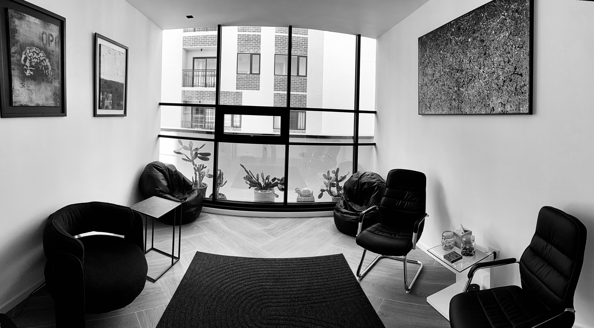

La psiquiatría es ciencia en su base
y arte en su ejercicio

Aquí, los límites no recortan: hacen posible la profundidad.
El tiempo, el ritmo y los límites no están para apurar procesos, sino para que puedan desplegarse con seguridad.
No acompaño para tranquilizar, sino para pensar lo que duele.
A partir de aquí, escuchar implica decisión.
Escucho sin prisa, pero no sin dirección.
El trabajo empieza cuando dejamos de evitar lo que insiste.
Para quienes descubren que no todo puede decirse en voz alta.
Arte y Vida →